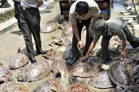
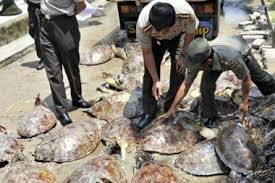
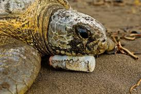

During their long lives, sea turtles travel between land and sea and swim thousands of miles in the
ocean.
They must wait decades to breed before returning to the same beaches where they were born to lay their
eggs.
Females can lay hundreds of eggs in a single nesting season, but only a small percentage of them will
hatch
and survive their first year.
Aside from these substantial natural dangers, sea turtles face a variety of human-caused
problems,
including by catch in commercial fishing gear, illegal trading, consumption, and climate change.
Sea turtles continue to be harvested unsustainably both for human consumption and trade of their parts. Turtle meat and eggs are a source of food and income for many people around the world.
All stages of a sea turtle's life are affected by environmental conditions such as temperature—even the sex of offspring.Unusually warm temperatures caused by climate change are disrupting the normal ratios, resulting in fewer male hatchlings.

Sea turtles can mistake floating plastic materials for jellyfish and can choke on them when they try to eat them. Trash on beaches can trap hatchlings and prevent them from reaching the ocean.

 

Sea a turtles are still being collected in an unsustainable manner, both for human consumption and for
the
trading of their parts. Many people around the world rely on turtle meat and eggs for sustenance and
revenue. Turtles are also killed for medicine and religious ceremonies by some people. Every year, tens
of
thousands of sea turtles are killed in this manner, decimating populations of already endangered green
and
hawksbill turtles.
Turtle slaughter for both local and international markets continues. The Convention on
International
commerce in Endangered Species of Wild Fauna and Flora (CITES), a global agreement among nations to
regulate
or prohibit international commerce in threatened species, prohibits international trade in all sea
turtle
species and their parts. Illegal trafficking continues to exist.


Environmental variables such as temperature influence all stages of a sea turtle's life, including the
sex of
offspring. Temperatures that are unusually warm due to climate change are disturbing typical ratios,
resulting in fewer male hatchlings.
Warmer sea surface temperatures may also result in the loss of crucial foraging areas for sea turtles,
while
increasingly severe storms and sea level rise may destroy critical breeding beaches and harm nests.


When sea turtles try to eat floating plastic items, they may mistake them for jellyfish and choke. These encounters are frequently fatal. Lost or discarded fishing gear, known as ghost gear, entangles sea turtles and can cause them to drown or render them unable to feed or swim. Trash on beaches can entangle hatchlings and keep them from reaching the ocean. Oil spills kill marine turtles of all ages.
Education is critical to addressing marine pollution. The public can become involved in this problem by doing the following: